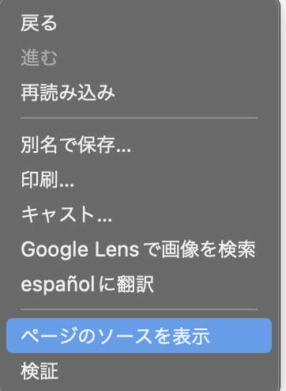
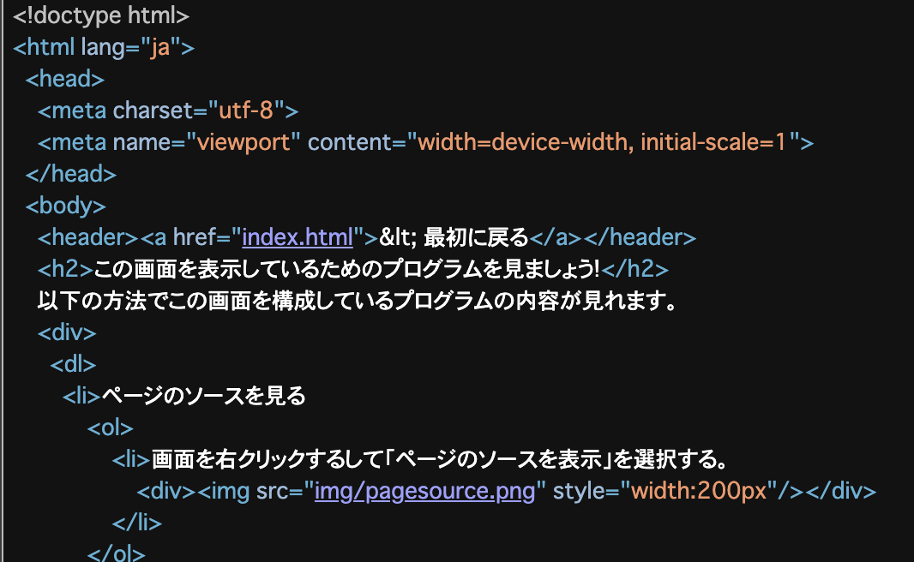
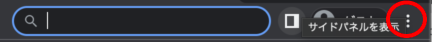
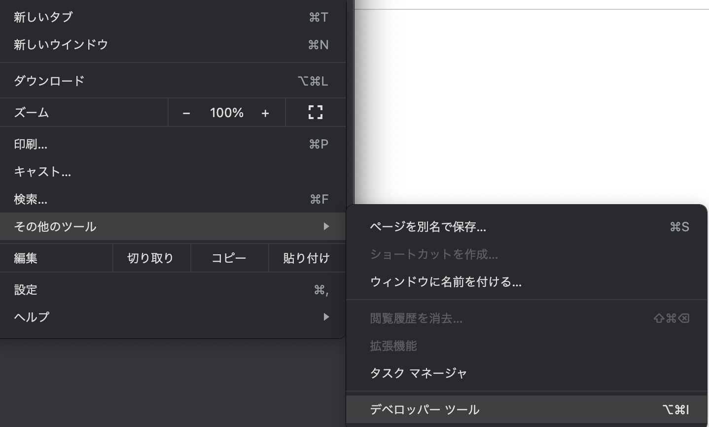
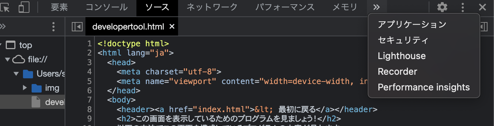
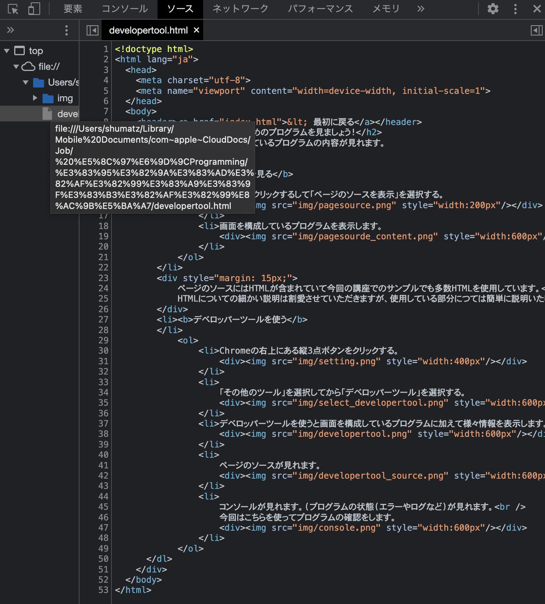
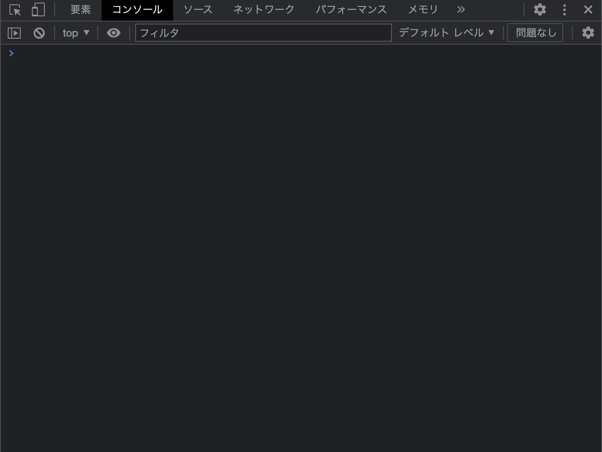

ページのソースを見る
- 画面を右クリックして「ページのソースを表示」を選択する。

- 画面を構成しているプログラムを表示します。

ページのソースにはHTMLが含まれていて今回の講座でのサンプルでも多数HTMLを使用しています。
HTMLについての細かい説明は割愛させていただきますが、関連している部分につては簡単に説明いたします。
デベロッパーツールを使う
- Chromeの右上にある縦3点ボタンをクリックする。

-
「その他のツール」を選択してから「デベロッパーツール」を選択する。

- デベロッパーツールを使うと画面を構成しているプログラムに加えて様々情報を表示します。

-
ページのソースが見れます。

-
コンソールを開いてください。コンソールではプログラムの状態(エラーやログなど)が見れます。
今回はこちらを使ってプログラムの確認をします。
